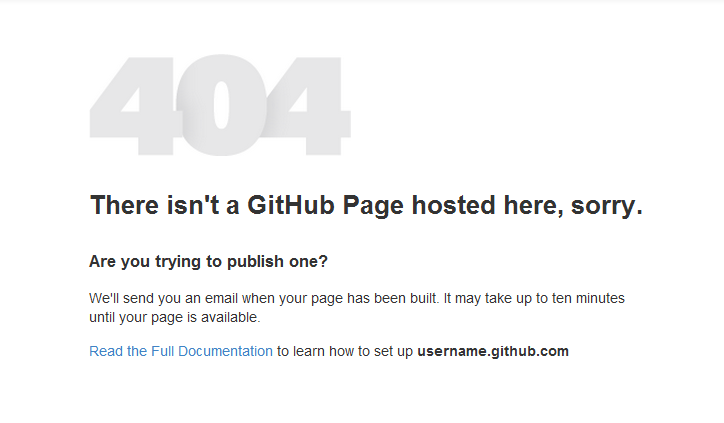

GitHub Page (coffeescript.com) Takeover Post Mortem

Look familiar? At around 11 pm on September 4th I saw this visiting http://coffeescript.com and knew I could take over the domain. Here’s how, and what you can do to protect your domain.
There are a variety of cases where this appearing is perfectly fine. For instance, you’ll see it at http://pwmckenna.github.com/idontexist.html, which makes sense because there I don’t have a repository called idontexist with a index.html file in the gh-pages branch.
Where this is a problem is when you see this on a custom (non-github) domain. It means that they’ve configured their dns to point to the github pages servers (in this case, an A record pointing to 204.232.175.78). And unfortunately this means its up for grabs, first come, first serve.
To serve the custom domain from your repository, you simply need to have a file called CNAME in the root directory, which contains the domain you wish to serve. ie:
CNAME
coffeescript.com
There’s currently no way for GitHub to verify that the creator of the CNAME file is the administrator of the domain, so its possible for anyone to create one. In fact, if you do this before the administrator creates their CNAME file, your page will continue to be served, rather than the owners!
What should I do?
I created a repo with a gh-pages branch, and commited the CNAME file above, as well as an index.html that simply redirected to coffeescript.org. I waited a few minutes, still not quite believing it would work. But then a refresh directed me to coffeescript.org!
Then I got scared.
I admire Jeremy Ashkenas as much as the next guy, and I was of course only trying to help. But then again, so was Egor Homakov. I shot off emails to GitHub and Jermey, and headed to irc to sound the alarm, but no one was awake, so I headed to bed very worried about being discovered.
All is well that ends well
Turns out that Jeremy was appreciative, and Shawn Davenport over at GitHub was very responsive. Its a tough problem to solve, and it is still possible to fall into the same trap, but Shawn updated the gh-pages custom domain page to include the following warning:
Good to know: create this file and wait for the notification from GitHub that your Page was built successfully before making DNS changes in the next step.
The A record has since been updated to redirect to coffeescript.org via dns, but it was kind of exciting to have such a popular domain at my fingers. Be careful, or your domain might be next!
Lesson!
Set up your github repo first, with a CNAME file in your gh-pages repository. Make sure there’s only a single entry, otherwise your page might build successfully without actually serving the additional domains. If you don’t receive a notification saying that it built successfully, DO NOT SET UP YOUR DNS. It is even possible to squat on domains via private (impossible for you to find) repos, so go ahead and assume if you can’t build its because I have a repo with your name on it :)